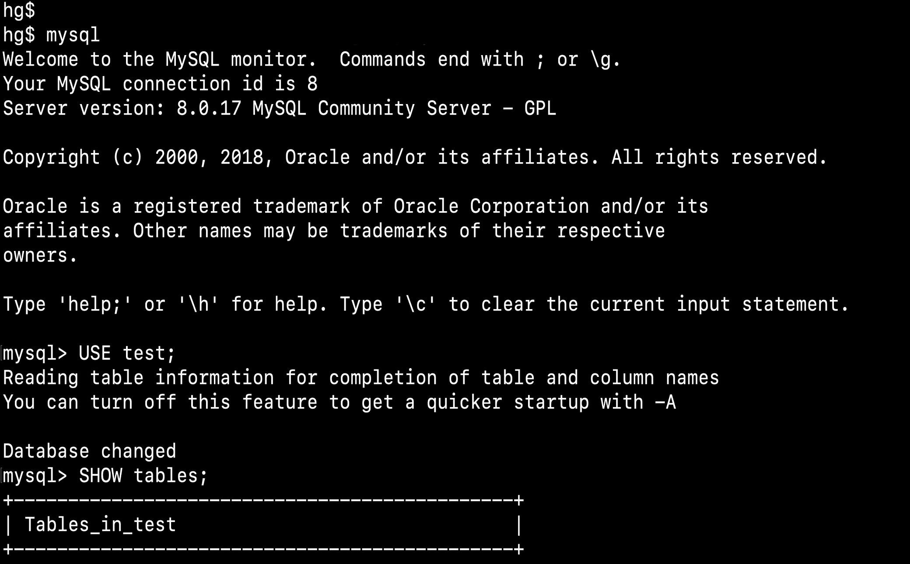

Lates Portfolio



Saya adalah pelajar SMK kelas XI Jurusan Rekayasa Perangkat Lunak yang mempunyai hobi mendengarkan musik, menonton film, dan membaca novel.
Download CVNama lengkap saya adalah Lulu Farid Hakim, biasa dipanggil Lulu ataupun Farid. Saya lahir pada hari Jum'at di Bandung pada tanggal 16 Maret 2007. Alamat saya di Jl. Karang Tinggal Rt/Rw 001/009 Desa Ciheulang, sebelum SDN Ciheulang 03-04, cat rumah warna biru. Saya bersekolah di SMK Negeri 7 Baleenda kelas XI Jurusan Rekayasa Perangkat Lunak (RPL).
Read More